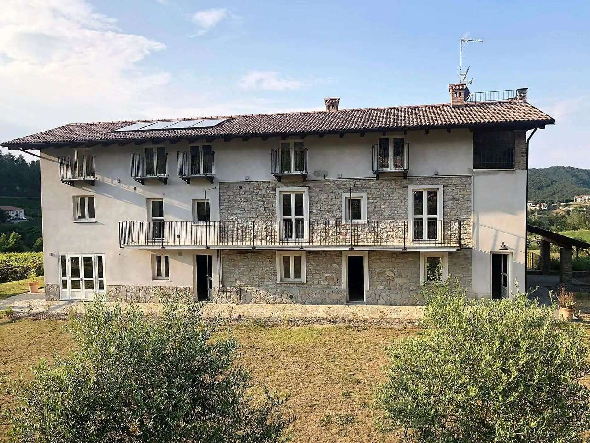

€1.150.000
Loazzolo · Piedmont · Italy
Fully renovated Loazzolo village building in a 1.45 ha vineyard with a large courtyard swimming pool — Langhe Astigiane character and ready hospitality use under the €1.2M cap.
Opened 13 Sep 2026; 670 m² / 14,500 m² vineyard; 4 lodgings + master (6 bed / 6 bath). Habitable now as B&B. Not tagged bargain (commercial-scale at €1.15M).
Open listing